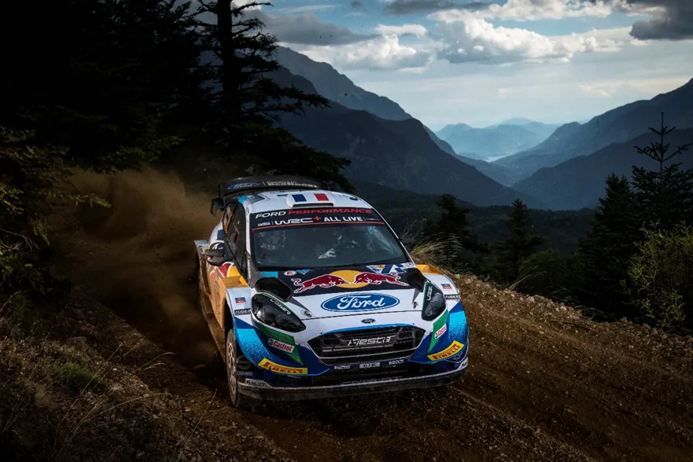
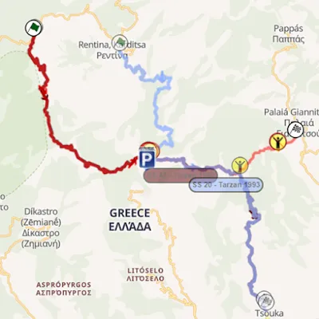
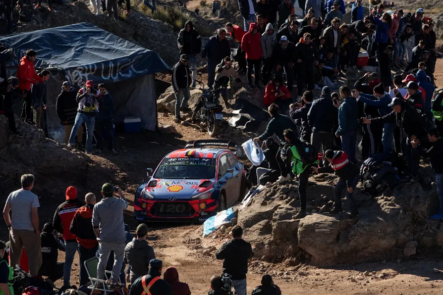
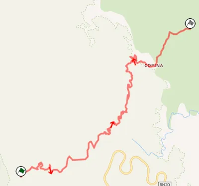
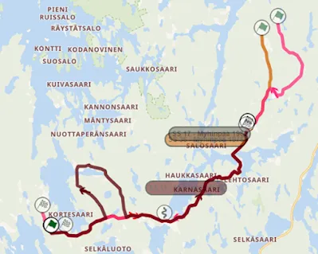
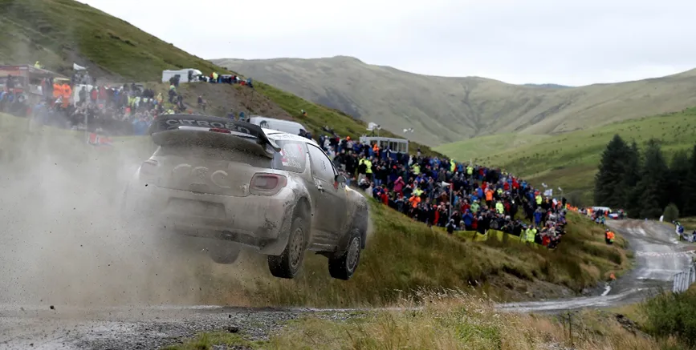
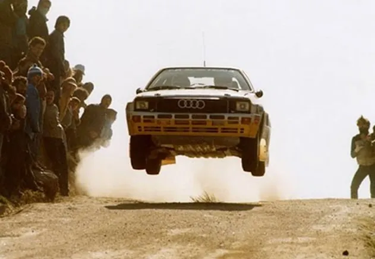
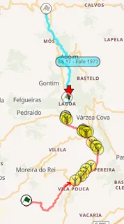

Top 30 Stages in WRC History: 6-10
The poll is closed, and the results are ready to be announced!
We asked you for your favorite WRC stages, and you had your say. Each voter selected 15 stages out of a pool of 100, and the 30 stages that had the most votes, combined with our experts’ ratings, made it to our list. This was a collaboration between us and Antti from itgetsfasternow.com. This list wouldn’t have been possible without him, so please go check his blog. He will have his own unique post based on this list when all the stages are revealed.
Throughout this month, we’ll be going through the results. Let's see what's special about these 5 stages, as we head into the top 10.
10 – Tarzan– Acropolis Rally

When it comes to Rally Acropolis stages, Tarzan is a stage that people have a special place in their hearts for. The stage is named after a hermit named George Bourgos whose nickname was Tarzan.
Tarzan moved to the mountains of Evritania in 1940 after being diagnosed with tuberculosis and lived to the old age of 92. He was an icon of the Rally, with many drivers stopping outside his hut to say hello to him.
The Tarzan stage was first used in 1975 under the name Fourna, with the name “Tarzan” first appearing in 1979. It quickly became infamous for its roughness, and became one of the most famous Acropolis stages.
The classic route of Tarzan started outside Tarzan’s hut and followed the modern stage route, but instead of continuing to the village of Palia Giannitsou it turned right, following a very twisty and technical road and ended at the village of Tsouka. From 1992 to 1994 the stage used a different start, starting at the village of Redina. That part has now been paved. In 2003 the stage returned for the 50th anniversary of the Acropolis with a new layout very similar to the modern one, skipping the classic start of the stage.
Famous moments include Colin McRae losing nearly 3 minutes because of a puncture and dropping to 8th in 2003 Carlos Sainz crashing out from 3rd in 1992, Didier Auriol losing the lead in Tarzan in 1991and Miki Biasion going 39s faster than everyone in 1988.

Modern Tarzan and some layouts used throughout the years.
9 – El Condor– Rally Argentina

Located up in the Traslasierra mountains, lies Copina - El Cóndor. El Condor is a stage synonymous with Rally Argentina. Parts of El Condor were first used in 1985 as La Posta, with the name El Condor first appearing in 1986.
Since then, El Condor’s route has remained virtually unchanged since 1994, with 2011 being an exception, with the organizers running a mixed surface stage, that drivers weren’t fans of.
El Condor is rough, narrow and technical. It's also one of the slowest stages in Rally Argentina. The stage is also famous for its narrow bridges and it always attracts massive crowds, with many Argentinians camping up in the mountain days before the Rally.
Famous moments include, Neuville vs Evans showdown for the win in 2017, Hayden Paddon going 11 seconds faster than everyone in El Condor and securing his first and only WRC win, Petter Solberg going 18 seconds faster than everyone in 2012, Mikko Hirvonen’s engine expiring in 2009, Marcus Gronholm passing Tommi Makinen for the lead in 2002 and Colin McRae setting the fastest time in 1998, despite emergency repairs on the suspension in the road section.

The map of El Condor. The stage has also been used many times in reverse.
8 – Myhinpää – Rally Finland
First used in 1969, Myhinpää is a Rally Finland classic. Myhinpää is most known for its many jumps and its fast roads.
In the 70s, Myhinpää’s layout was similar to the one used in 2023, but the stage going on for a bit more, 3 to 5 kilometers more, and also sometimes ran in reverse. In 1982 the stage used a unique route, with the stage being 25km long.
Apart from that, in the 80s and early 90s Myhinpää used the same route as this year’s version, mostly in reverse. In 1992 and 2014 a 7km narrow but fast “loop” was added with the stage heading north and then rejoining itself back to its usual route.
Famous moments include Kalle Rovanpera rolling from the lead in 2023, Hayden Paddon losing his power steering in 2014, Conrad Rautenbach crashing out in 2009, Sebastian Lindholm crashing out in 1994, Michelle Mouton going off in 1982 and Henning Solberg going off in 2010.

Map of Myhinpää. You can see the “loop”, the old start and the 1982 version.
7 – Sweet Lamb Hafren – Wales Rally GB

Arguably the most famous stage in the British Isles. And it’s my personal favourite from the RAC Rally. Sweet Lamb – Hafren as you can guess is a combination of two stages, Sweet Lamb and Hafren.
The name Hafren first appeared in 1967, while Sweet Lamb only appeared as a name in 1988. The combined stage was first used in 1993, and was also used in 1995 and 2000. It returned after a 12-year absence in 2012, and also featured in 2014 and in the last two WRC rallies held in Wales, in 2018 and 2019.
There’s quite a variety of roads used by both Sweet Lamb and Hafren, never mind the combined stage, so describing one layout would be quite difficult. But in its latest configuration, the stage started in Sweet Lamb, near the famous “fan-zone” with the water splash and jumps, and finished where Hafren usually starts at. The stage offers a great deal of roads.
Parts of the stage are technical, with ditches either side of the road often catching people out, whereas others are fast and flowing, but the danger of running wide and ending up into the trees still remains. Junctions and 90o turns are not absent either, with typical Wales narrow gates also posing a threat for the drivers.
It is also worth mentioning that back in the day, there used to be a river crossing in the Sweet Lamb fanzone, but there's since been a bridge, and the water splash is now man-made.
Famous moments include Thierry Neuville sliding wide into a ditch and losing a minute in 2018, Ott Tanak breaking his sump guard and retiring from the lead also in 2018, Yazeed Al-Rajhi rolling his Fiesta in front of the cameras in 2017, Craig Breen going off in 2017, Jari-Matti Latvala going off the road into a ditch, and Neuville rolling in 2015, Mikko Hirvonen rolling out of the rally in 2008, McRae snatching the lead from Gronholm in 2000, Bruno Thiry’s Escort catching fire and Auriol going off in 1997, and so so many more.
6 – Fafe – Rally Portugal

When you think of Rally Portugal, you think of Fafe. Simple. This stage has been ran since the first Rally Portugal in the WRC back in 1973.
Back then Fafe didn’t have the famous Fafe jump and didn’t share any roads with the modern stage. The old Fafe started around a kilometre after the Fafe jump and was a twisty and technical 7.5km test.
Most of this stage has now been paved and the roads are used in Rally Fafe – Montelongo.

Modern-day Fafe along with the older version (Fafe-Lagoa).
The roads of the modern Fafe stage were first used in 1984 as Fafe – Lameirinha. This stage is similar to the modern one, with a different start, that adds 3km to the stage. Fafe – Lameirinha featured in a Rally Portugal itinerary until 2001, when the rally was dropped off the calendar.
Portugal returned to the WRC in 2007, but in Algarve, so Fafe didn’t feature. All of the Fafe – Lameirinha stage is used in the ERC in Rali Serras de Fafe. As a special mention, Fafe featured as an unofficial WRC non-championship event from 2012 to 2014 with many drivers competing in the rally-sprint as preparation for the rally proper.
The classic Portugal stages returned in 2015, and ever since then, Fafe has been the power stage of the Rally. The stage is technical but it’s usually the fastest stage of the rally. It also features roads with different characteristics, with both narrow - technical and wide – flowing roads, along with famous tarmac parts that connect the gravel roads together. As a side-note, there have also been other stages with the name Fafe, namely Fafe-Montim and Fafe-Luilhas, but they don’t share any roads with the modern Fafe stage.
Nowadays they feature in Rali Serras de Fafe with other names.
Famous moments include Dani Sordo passing Katsuta for 3rd and Teemu Suninen crashing out of the WRC2 lead in 2022, Esapekka Lappi, Kris Meeke, Sebastien Loeb, and Gus Greensmith all going off in 2019, Mads Ostberg’s massive jump from 2017, the muddy 2001 stage and Kankkunen passing Biasion for the lead in 1994.
Written by Dimitris Theodorou in collaboration with Antti from itgetsfasternow.com
Pictures in this post come from the Red Bull Content Pool and the thumbnail from this video
Screenshots of the stage routes are from Rally-Maps.com
Comments